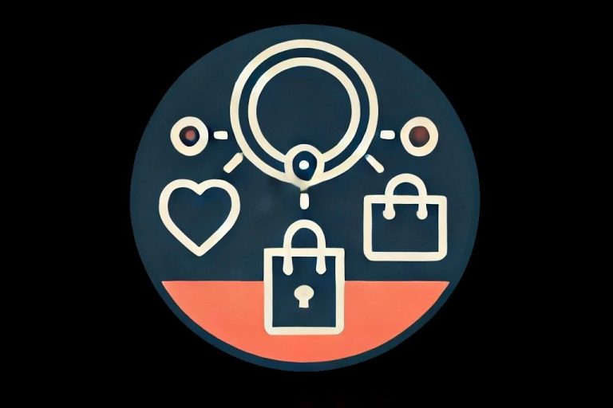

Böden & Stufen
Saugen und feucht wischen – passend zum Bodenbelag und vereinbarten Turnus.
Sauberkeit, die beim Eintreten auffällt
Gründliche Treppenhausreinigung für Privathaushalte, Vermieter, Hausverwaltungen und Gewerbe – abgestimmt auf Ihr Objekt und Ihren Bedarf.
Mo–Fr, 08:00–16:00 Uhr · Mülheim und Umgebung

Leistungen
Jedes Treppenhaus ist anders. Gemeinsam legen wir fest, was regelmäßig oder bei Bedarf erledigt werden soll.
Saugen und feucht wischen – passend zum Bodenbelag und vereinbarten Turnus.
Lichtschalter, Haustür, Geländer und Fußleisten werden auf Wunsch mitgereinigt.
Keller, Fenster und weitere Gemeinschaftsflächen können individuell vereinbart werden.

Sie bestimmen Umfang und Häufigkeit – einmalig, regelmäßig oder als ergänzende Reinigung nach Absprache.
Für wen wir da sind
Mehr Zeit für das Wesentliche, ohne beim sauberen Hausflur Abstriche zu machen.
Ein ordentliches Treppenhaus für zufriedene Mietparteien und einen guten ersten Eindruck.
Abgestimmte, verlässliche Pflege für die betreuten Objekte.
Saubere Zugänge und Gemeinschaftsbereiche für Mitarbeitende und Kundschaft.
Einfach starten
Rufen Sie an oder schreiben Sie eine E-Mail mit den wichtigsten Eckdaten.
Wir klären Objekt, gewünschte Leistungen und Häufigkeit persönlich.
Sie erhalten eine individuelle Vereinbarung, die zu Ihrem Haus passt.
Einsatzgebiet
Kurze Wege und persönlicher Kontakt: Treppenhausreinigung in

Unverbindlich anfragen
Erzählen Sie kurz von Ihrem Objekt und Ihren Wünschen. Martina Hoffmann meldet sich persönlich.
ErreichbarkeitMo–Fr, 08:00–16:00 Uhr